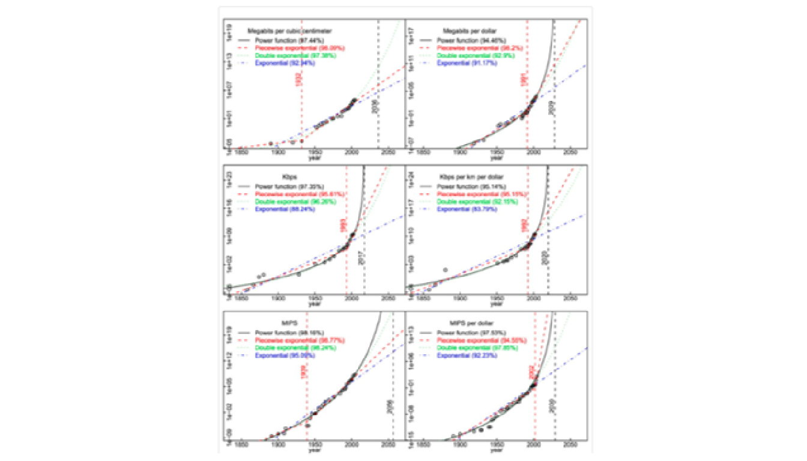

Crecimiento Económico
Ideas y productividad: Investigación y Desarrollo
Modelo de Investigación y Desarrollo (I&D)
Romer (1990)
La economía se dedica recursos no solo a la producción de bienes sino también hacia la producción de nuevas tecnologías.
Supone que la mano de obra, el capital y la tecnología se combinan por un sector intermedio especializado para producir mejoras en la tecnología.
Puntos relevantes:
Dificultades empíricas en contraste con Solow y Ramsey.
No hay mathiness (en contraste con otros modelos endógenos)
El modelo hace otras dos simplificaciones:
Primero, se asume que tanto la I&D como las funciones de producción de bienes son funciones Cobb-Douglas generalizadas, es decir, la función de producción no tiene necesariamente rendimientos constantes a escala.
Como en el modelo de Solow, toma la fracción de la producción ahorrada y las fracciones de la fuerza laboral y el acervo de capital utilizados en el sector de I&D como exógenas y constantes.
Modelo de Investigación y Desarrollo (I&D)
Economía de las ideas
Ideas son bienes no rivales
La no rivalidad permite reutilizar una idea y genera rendimientos crecientes al considerar conjuntamente ideas e insumos rivales. La exclusión parcial afecta la posibilidad de apropiarse de rendimientos e incentivar su producción
Ejemplos:
Terapia de rehidratación oral (Ejemplo de Romer)
Replicar la producción de una fábrica vs instrucciones para hacer una computadora
Hacer mas productivo a una persona vs hacer más productivo a un número amplio de personas
Es muy fácil obtener crecimiento en un agregado en cualquier modelo, incluso en Solow, debido al crecimiento de la población. Más trabajadores automáticos significan que se producen más coches.
En Solow, esto no puede sostener el crecimiento per cápita porque necesitamos crecimiento en automóviles por trabajador. Pero en Romer, este no es el caso: más investigadores producen más ideas, lo que hace que todos estén mejor debido a la no rivalidad.
Modelo de Investigación y Desarrollo (I&D)
Romer se centró originalmente en ideas no rivales que eran muy fáciles de copiar, como software, libros o planos. Al ser fáciles de copiar, no son fácilmente excluibles y, por lo tanto, sería difícil obtener rentas sobre ellas sin algún tipo de protección.
Las patentes o los derechos de autor otorgan exclusividad a estas ideas fáciles de copiar. Esos derechos de propiedad intelectual ofrecen el incentivo para que las personas creen nuevas ideas fáciles de copiar.
La economía del crecimiento endógeno implica una relación no lineal entre los derechos de propiedad intelectual y la actividad innovadora.
Paradoja:
Sin patentes puede haber innovación por otros incentivos, como la ventaja de entrar primero, el secreto o la financiación pública. En el modelo, la apropiación de rendimientos sostiene la inversión privada en ideas.
Con demasiada protección de patentes será demasiado difícil reemplazar a las empresas existentes.
Modelo de Investigación y Desarrollo (I&D)
Crecimiento endógeno y capital humano
En las visiones de Romer y Lucas de como generar crecimiento endógeno, se contesta de forma distinta a la pregunta: ¿Los factores de la producción se igualan a su producto marginal?
Sólo dos de los siguientes tres argumentos pueden ser ciertos:
Manteniendo fijas las ideas, la producción tiene rendimientos constantes a escala en los factores rivales.
Los factores no rivales reciben algún pago de la producción.
Los factores rivales reciben un pago de la producción igual a su producto marginal.
Con rendimientos constantes en los factores rivales, pagar a cada uno su producto marginal agota el producto (teorema de Euler). Un pago positivo adicional a las ideas exige apartarse de alguna de esas condiciones. Romer utiliza competencia monopolística y apropiación parcial de las rentas de innovación.
En la lectura de Lucas con externalidades del capital humano, las empresas pueden remunerar los factores rivales a su producto marginal privado, mientras el efecto externo del conocimiento no recibe un pago separado.
Investigación y crecimiento de la productividad
- Investigadores equivalentes a tiempo completo (FTE) en seis países. La cobertura temporal es desigual; FTE no equivale necesariamente al número de personas físicas.
Investigación y crecimiento de la productividad
- Evolución relativa del gasto en I+D, con índice 2000 = 100 para cada país. No compara tamaños monetarios absolutos entre países.
Investigación y crecimiento de la productividad
- Logaritmo natural del gasto relativo a 2000, representado sobre un eje lineal. Las diferencias entre años indican cambios logarítmicos acumulados, no tasas anuales directamente.
Investigación y crecimiento de la productividad
- La gráfica muestra el crecimiento anual medio de la productividad en ventanas de diez años. Su comparación con las series de investigadores y gasto permite explorar tendencias, sin constituir una prueba estadística de asociación.
Investigación y crecimiento de la productividad
- En la simulación se nota que ambas economías colapsan hacia una proporción de investigadores / productividad de 2, y una tasa de crecimiento común de la productividad de 2%, cuya tasa de crecimiento es la tasa de crecimiento de los investigadores.
Investigación y crecimiento de la productividad
- Logaritmo del número de investigadores FTE y crecimiento de productividad: 265 observaciones de nueve países del objeto local de 2021. Esta es una nueva asignación docente del material archivado.
Investigación y crecimiento de la productividad
- Cambio del logaritmo de investigadores FTE y crecimiento de productividad en seis países. El eje horizontal usa un rezago de 10 observaciones y divide la diferencia entre 10; con huecos temporales no equivale necesariamente a 10 años.
Investigación y crecimiento de la productividad
“Age and Great Invention” (Jones, 2010):
Jones ha investigado mucho sobre cómo la ciencia se ha vuelto más difícil con el tiempo, en el sentido de que hoy los científicos tienden a ser mucho mayores cuando producen ideas que son dignas de un premio Nobel o algún premio similar.

Investigación y crecimiento de la productividad
“Are Ideas Getting Harder to Find?” (Bloom, Jones, Van Reenen y Webb (BJVW), AER 2020):
En muchos modelos, el crecimiento económico surge de las personas que crean ideas, y la tasa de crecimiento a largo plazo es el producto de dos términos: el número efectivo de investigadores y su productividad de investigación.
BJVW presentan evidencia de varias industrias, productos y empresas que muestran que el esfuerzo de investigación está aumentando sustancialmente mientras que la productividad de la investigación está disminuyendo considerablemente.
A través de una amplia gama de estudios de casos en varios niveles de desagregación, encontramos que las ideas, y en particular el crecimiento exponencial que implican, son cada vez más difíciles de encontrar. El crecimiento exponencial resulta de grandes aumentos en el esfuerzo de investigación que compensan su productividad decreciente.
Investigación y crecimiento de la productividad
“Are Ideas Getting Harder to Find?” (Bloom, Jones, Van Reenen y Webb (BJVW), AER 2020):
Un buen ejemplo es la ley de Moore: el número de investigadores requeridos hoy para lograr la famosa duplicación cada dos años de la densidad de los chips de computadora es más de 18 veces mayor que el número requerido a principios de los años setenta.

Investigación y crecimiento de la productividad
“Are Ideas Getting Harder to Find?” (Bloom, Jones, Van Reenen y Webb (BJVW), AER 2020):
BJvRW examinan industrias individuales o tipos de productos para establecer que la “productividad ideal” cae.
Puede ser que las ideas no se traduzcan perfectamente a la productividad, o que estemos difundiendo nuestros esfuerzos de investigación en una lista cada vez más amplia de industrias o líneas de investigación
En conjunto, esto parecería una idea decreciente de productividad.

Investigación y crecimiento de la productividad
“Are Ideas Getting Harder to Find?” (Bloom, Jones, Van Reenen y Webb (BJVW), AER 2020):
No hay disminución en la tasa de crecimiento de los transistores, pero tampoco hay un aumento, a pesar del mayor número de investigadores.

Investigación y crecimiento de la productividad
“Are Ideas Getting Harder to Find?” (Bloom, Jones, Van Reenen y Webb (BJVW), AER 2020):
La productividad de la investigación en semiconductores cae durante el periodo estudiado. La Ley de Moore sigue vigente, pero el esfuerzo de investigación de semiconductores es más de 18 veces mayor que a principios de los años setenta para sostener la duplicación de densidad estudiada. Bloom et al. (2020), resumen.

Investigación y crecimiento de la productividad
“Are Ideas Getting Harder to Find?” (Bloom, Jones, Van Reenen y Webb (BJVW), AER 2020):
Implicaciones para el crecimiento:
La pregunta que surge es si esto implica que el crecimiento económico se desacelere hasta cero. Posiblemente no.
Lo más probable es que las ideas tengan una tasa de crecimiento incluso si la productividad de ideas está disminuyendo con el tiempo.
A medida que acumulamos más ideas, la tasa de crecimiento de las ideas disminuye: la productividad ideal disminuye.
Pero solo porque la productividad ideal se reduce a medida que obtenemos más ideas no significa que la tasa de crecimiento de las ideas esté disminuyendo. ¿Por qué?
Porque el esfuerzo de la investigación está aumentando con el tiempo debido al crecimiento de la población.
Si la proporción de personas que trabajan como investigadores es constante, entonces su número absoluto está aumentando con el tiempo.
Investigación y crecimiento de la productividad
“Are Ideas Getting Harder to Find?” (Bloom, Jones, Van Reenen y Webb (BJVW), AER 2020):
Implicaciones para el crecimiento:
La tasa de crecimiento de la población efectiva ha disminuido: si la población que proporciona investigadores crece más lentamente, el esfuerzo aumenta más despacio y el crecimiento de largo plazo de las ideas disminuye bajo los supuestos del modelo semiendógeno.
Una disminución en la proporción de la población que está haciendo investigación: esto generaría una tasa de crecimiento de ideas a corto plazo más baja, ya que el esfuerzo tendría una tasa de crecimiento a corto plazo más baja por un tiempo a medida que avanzábamos hacia una menor proporción de personas que realizan investigaciones.
Una caída exógena en el nivel de la productividad ideal. En este caso, la tasa de crecimiento de las ideas eventualmente volverá a subir a lo que era antes, después de tener un menor crecimiento de la productividad hacia el estado estacionario.
Afectaciones por políticas públicas: subsidios para investigación básica, política fiscal con respecto al tratamiento del gasto en I&D, etc.
Investigación y crecimiento de la productividad
“Superexponential long-term trends in information technology” (Nagy, et. al. 2011):
La Ley de Moore ha creado una percepción popular del progreso exponencial en la tecnología de la información.
¿Pero es el progreso de TI realmente exponencial?

Investigación y crecimiento de la productividad
- Logaritmo de investigadores FTE y nivel logarítmico de productividad en seis países. Esta variante compara niveles, mientras que las otras dispersiones de la sección muestran crecimiento.
Investigación y crecimiento de la productividad
- Logaritmo de investigadores FTE y crecimiento de productividad en los seis países del archivo StudyGuide. Se conserva separado del objeto local de nueve países; no se mezclan sus muestras ni ediciones.